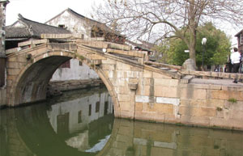

| 周庄简介 | ||
|  | 始建于1086年的古镇周庄，因邑人周迪功先生捐地修全福寺而得名，春秋时为吴王少子摇的封地，名为贞丰里，是隶属于江苏省昆山市和上海交界处的一个典型的江南水乡小镇，江南六大古镇之一。于2003年被评为中国历史文化名镇，最为著名的景点有：沈万三故居、富安桥、双桥、沈厅、怪楼、周庄八景等。富安桥是江南仅存的立体形桥楼合壁建筑；双桥则由两桥相连为一体，造型独特；沈厅为清式院宅，整体结构严整，局部风格各异；此外还有澄虚道观、全福讲寺等宗教场所。周庄有“中国第一水乡”之美誉。 | |
| 会员登录 | 周庄八景 | |
| 用户名： | ||
| 密码： | ||
全福晓钟 指归春望 周庄永庆庵 蚬江渔唱 |
南湖秋月 庄田落雁 急水扬帆 |
|
版权所有©周庄旅游网 |
|
|